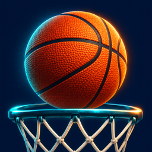

The court is open
Just you.
The ball.
One more bucket.
Night Court is an offline basketball game for iPhone and iPad. Flick toward the hoop, find your rhythm, and chase your personal best.
Contact support
How do I shoot?
Touch the ball, swipe upward toward the hoop, then lift your finger. Swipe direction controls aim. A smooth flick gives you a generous power sweet spot. Wait for each shot to finish before shooting again.
Arcade or practice?
Arcade gives you 60 seconds after a three-second countdown. Practice has unlimited shots. A basket earns two points, plus one for a clean swish. Three consecutive makes activate ×2; six activate ×3.
Sound and haptics
Open Settings on the start screen or in the pause menu to toggle sound and haptics separately. Sound respects silent mode. Haptics depend on your device; Reduce Motion follows your iOS accessibility setting.
Skins and saved progress
Choose your ball on the start screen to select one of five skins. Your skin, preferences, best score, and best streak are saved locally. No account or network connection is needed to play.
Why is my game paused?
Leaving the app pauses the clock and your shot. Tap Resume when you return. Use the pause menu to finish a practice session or return to the start screen.
Something isn’t working?
Close and reopen the app, then check for an update. Email support with your device model, iOS version, and the steps that caused the problem. Never include passwords or payment information.
We’re here to help
Contact Mahmut Aoata at mahmutaoata@gmail.com for game support or privacy questions.
Requires iOS 17 or later. No advertising, in-app purchases, accounts, or multiplayer.